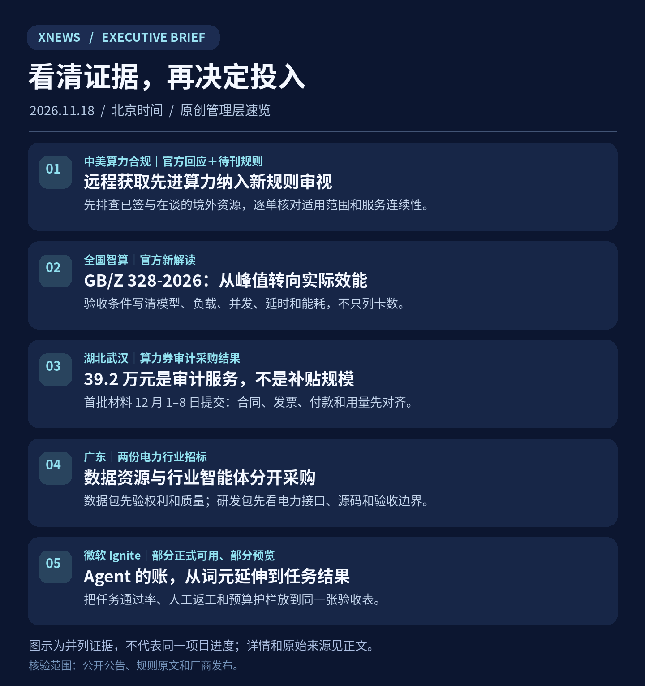

本期口径
北京时间 2026 年 11 月 18 日，检索截止 08:55。优先窗口：11 月 17 日 08:55 至 11 月 18 日 08:55；仅武汉申领通知标为 72 小时扩展背景。已回看近 7 期及当日独立 AI 日报，本期不重复后者四条选题。

01｜商务部回应美国远程算力限制：先核存量合同敞口
11月17日20:20，商务部就美国限制远程获取先进半导体的措施答记者问，表示坚决反对。如美方继续推进，中方将采取反制措施。美国商务部工业与安全局（BIS）的临时最终规则涉及部分境外数据中心向特定主体远程提供先进算力。美国《联邦公报》预公布稿列11月19日为拟刊登日，正文写明刊登日生效。
影响与建议：先列出可能受影响的已签及在谈境外算力合同，逐单让供应商书面说明适用范围、许可、停供通知和退出条款。不要把境外机房所在地当作唯一合规判断。
证据边界：已读中方答问和美方预公布稿；待核正式刊登文本。不把中方表态写成已经出台反制，也不推断所有海外云服务都受限。 [1] [2]
02｜智算集群怎么验收：总局解读统一的训推效能口径
11月17日16:30，市场监管总局公开解读《智能计算集群效能指标与测试方法》。训练侧看算力利用率、收敛速度、有效训练时间和能效，推理侧看吞吐、响应时延、并发与能效，也给出混合训练效率和能效损失比等异构评价指标。标准平台登记为GB/Z 328-2026，10月30日发布。
影响与建议：拟建、续租或异构替换时，可要求供应商在相同模型、上下文、并发和时延约束下交测试报告，分别核算持续可交付吞吐与能耗。
证据边界：11月17日新增是官方解读，不是文件当天发布或新生效；属于指导性技术文件，不是强制采购规则。未据解读推断具体合同验收值。 [3] [4]
03｜武汉算力券进入执行：先把四类兑付凭证对齐
11月17日17:06，武汉市数据局公布算力券发放审计服务采购结果，正文列武汉康力会计师事务所有限公司为成交候选供应商，金额39.2万元，公告期11月17–19日。11月16日16:58的申领通知属72小时扩展背景：首批覆盖10月29日至11月30日的实际使用，12月1–8日提交材料。
影响与建议：预算、销售和交付先同步核对合同、发票、付款证明及实际用量记录；把Token和算力资源分别建账。申领截至2027年10月29日或政策周期资金兑完，不应把预期补贴直接冲减报价。
证据边界：审计采购不是补贴总盘子，候选供应商不等于合同已签；与此前东湖高新区拟发补贴并非同一事项。 [5] [6] [7]
04｜广东电力AI出现两个投标窗口：数据资源与专业智能体
11月17日18:00，广东电网研发外委公告列运行风险与优化决策、配电调度、源网荷储协同推演三个智能体标包，限价依次为175万元、174.75万元、443万元。19:23，广东电力AI试研院另发数据资源二次招标，仅一包，限价870万元。两项均于11月23日23:59:59停止取文件，分别于12月8日、9日09:00截标。
影响与建议：443万元包要求源代码、联调、示范验证和知识转移，宜先筛电力机理、专业计算对接及研发交付能力；870万元数据包先核数据权利、范围和质量验收，不能按算力销售测算。
证据边界：已读两份南网平台原公告，未获取完整技术规范书。两项均不接受联合体；分属不同采购，均未成交，金额不合并作商机规模。 [8] [9]
05｜微软把任务价值纳入 Agent 365，但估算工时不是实际节省
11月17日（美国当地），微软在Ignite宣布Copilot Managed Runtime正式可用；Agent 365 Business Analytics从Frontier Public开始推出。微软称分析会结合任务、人通常完成该任务所需时间及Cowork承担的比例估算辅助工时；Cost Management则可按用户、服务、Agent和模型追踪消耗，并设预算限制和提醒。
影响与建议：把每件验收通过的任务成本、返工分钟数和超预算处置写进试点。供应商推算工时可作线索，需用真实样本复核，不能直接当成财务节省。
证据边界：依据微软官方披露，未实测功能、地区开放或企业许可。此条聚焦平台治理，与独立AI日报的模型发布和外置沙箱不同。 [10] [11]
存量事项
武汉5G＋工业互联网大会及同期算力互联网大会原定11月18–20日举行。此前已报日程，本期未另核开幕或现场成果；待有公开试点名单、责任单位或验收指标再计新增。 [12]
今日判断
今天最先做两件事：梳理境外算力合同的合规敞口，同时把武汉首批算力券的凭证按客户对齐。广东可立即筛标，但电力机理、数据权利和交付源码各有门槛，不宜以通用Agent平台直接应标。智算与Agent的共同信号是，预算判断正在从名义资源转向实际效果；采购验收应同时有可复测负载、质量和成本口径。